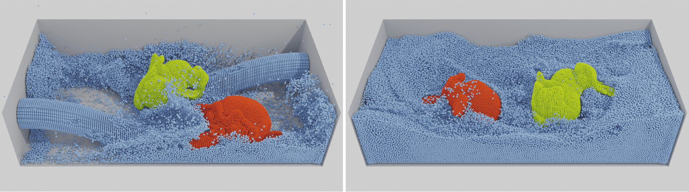

An Optimization-based SPH Solver for Simulation of Hyperelastic Solids
Eurographics 2023 · Computer Graphics Forum
1 Korea University, Korea2 LTCI, Telecom Paris, IP Paris, France

Abstract
This paper proposes a novel method for simulating hyperelastic solids with Smoothed Particle Hydrodynamics (SPH). The proposed method extends the coverage of the state-of-the-art elastic SPH solid method to include different types of hyperelastic materials, such as the Neo-Hookean and the St. Venant-Kirchoff models. To this end, we reformulate an implicit integration scheme for SPH elastic solids into an optimization problem and solve the problem using a general-purpose quasi-Newton method. Our experiments show that the Limited-memory BFGS (L-BFGS) algorithm can be employed to efficiently solve our optimization problem in the SPH framework and demonstrate its stable and efficient simulations for complex materials in the SPH framework. Thanks to the nature of our unified representation for both solids and fluids, the SPH formulation simplifies coupling between different materials and handling collisions.
Video
BibTeX
@article{kee2023optimization,
author = {Kee, Min Hyung and Um, Kiwon and Kang, HyunMo and Han, JungHyun},
title = {An Optimization-based {SPH} Solver for Simulation of Hyperelastic Solids},
journal = {Computer Graphics Forum},
year = {2023},
volume = {42},
number = {2},
pages = {225--233},
doi = {10.1111/cgf.14756},
url = {https://doi.org/10.1111/cgf.14756}
}